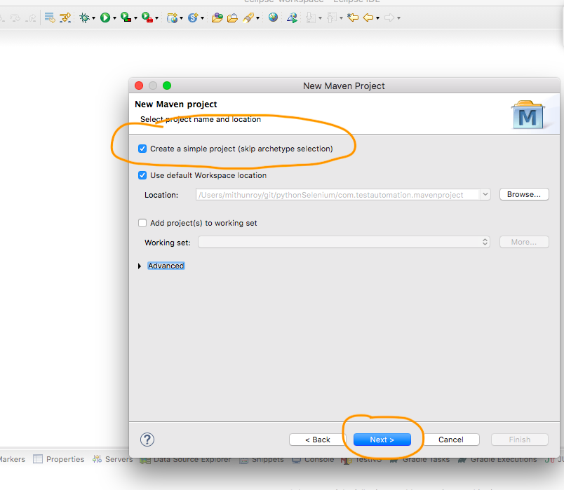
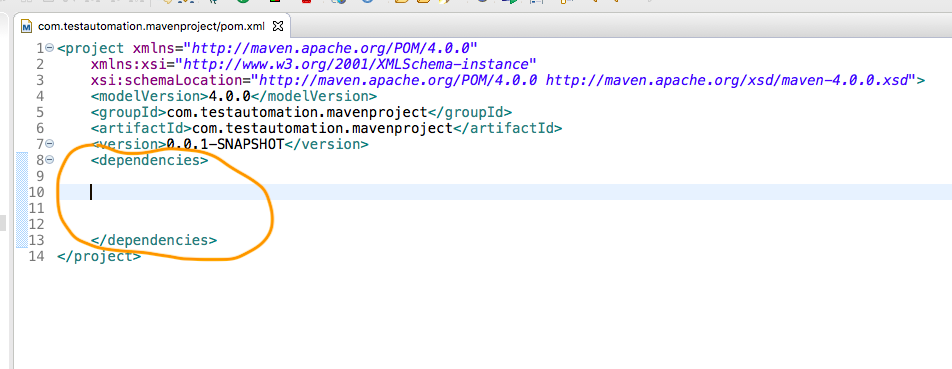

Rest Assured Set Up Using IntelliJ
1. Open Eclipse
2. Select any eclipse project path. Check below image.

3. It should navigate to Eclipse landing screen. If you see 'Workbench' image then
click on it.
4. We should see below screen.


5. Select new button from left top section as shown in below image.

6. Select Maven project. Click next button

7. Select create a simple project checkbox and click next.

8. Fill Group id and Artifact Id , it can be same. Here we are giving as
"com.testautomation.mavenprojects"
. Click on Finish button.

9. Once Maven Project is created then wait for sometime to auto build the project.
Once project is build then we can see pom.xml file created inside the project.

10. Open pom.xml to add 'Rest Assured' dependency. Double click on pom.xml
11. Now open google.com and type 'Rest Assured maven dependency' , you can find many
website
from where we can able to copy dependency code. See below steps from
where we are copying the code into Eclipse.

12. Add a dependencies block in Eclipse
